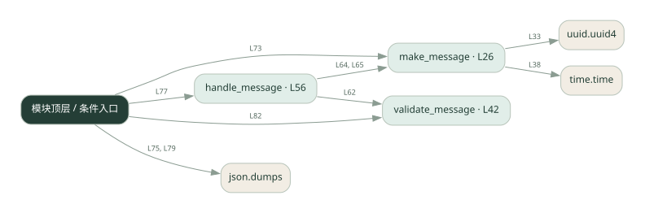

2-5 · 全课程第 25 节
Agent 消息信封
024.py
源码快照 6c5afa197265 · 静态解析 · 2026-09-10
01 / 要完成的事
给消息附上发送者、接收者、任务标识等字段并检查格式。
02 / 为什么要做
多个角色通信需要知道“谁给谁、属于哪件事”。
03 / 当前代码状态
主要展示本地计算、内存状态或模拟流程；是否写文件/启动子进程请看调用表。 本次只做静态解析，没有运行练习，也没有替你填写或修改原代码。
04 / 调用图
打开大图 ↗实线：源码中的直接调用；虚线：函数引用/注册、动态调用或按方法名推断的候选。L 是调用所在源码行号。箭头不表示执行顺序或每次必经；分支、循环、异步调度及框架内部调用需结合源码。灰色是外部/未解析目标，橙色是动态分发；省略 print、len 和常规容器操作以减少干扰。孤立函数可能尚未接入。

先从 模块入口 出发，沿箭头找到本文件函数，再查看外部调用或动态分发。右侧调用清单保留所有静态调用点，能回到原文件逐行对照。
05 / 函数定位
| 函数 / 定义行 | 职责（源码注释） | 内部调用 |
|---|---|---|
make_messageL26 | 构造一条 A2A 消息 | uuid.uuid4, time.time |
validate_messageL42 | 以源码函数体为准；下列调用展示其依赖。 | 未发现显式函数调用（可能直接计算、读写状态或尚未实现） |
handle_messageL56 | 以源码函数体为准；下列调用展示其依赖。 | validate_message, make_message |
这样做的优点
字段明确，方便路由和追踪。
代价与局限
自定义 JSON 演示不等于完整 A2A 标准实现；没有自动提供网络传输、认证和重试。
适用场景
学习消息格式、设计内部消息约定。
不宜直接照搬
直接声称能与任意 A2A 服务互通。
动手检验理解
删除一个必填字段，观察验证是否拒绝消息。
有未实现位置时先预测，再补齐验证。能启动不等于逻辑正确。
查看全部 18 个静态调用 / 引用点
| 调用方 | 目标 | 源码行 | 类型 |
|---|---|---|---|
| make_message | uuid.uuid4 | 33 | 调用 |
| make_message | time.time | 38 | 调用 |
| handle_message | validate_message | 62 | 调用 |
| handle_message | make_message | 64 | 调用 |
| handle_message | make_message | 65 | 调用 |
| <模块入口> | print | 69 | 调用 |
| <模块入口> | print | 70 | 调用 |
| <模块入口> | print | 71 | 调用 |
| <模块入口> | make_message | 73 | 调用 |
| <模块入口> | print | 74 | 调用 |
| <模块入口> | print | 75 | 调用 |
| <模块入口> | json.dumps | 75 | 调用 |
| <模块入口> | handle_message | 77 | 调用 |
| <模块入口> | print | 78 | 调用 |
| <模块入口> | print | 79 | 调用 |
| <模块入口> | json.dumps | 79 | 调用 |
| <模块入口> | validate_message | 82 | 调用 |
| <模块入口> | print | 83 | 调用 |